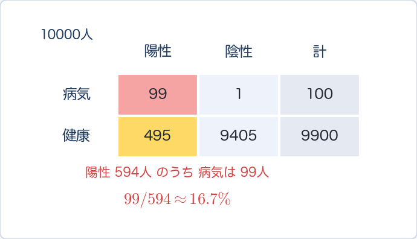
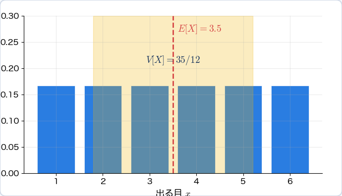
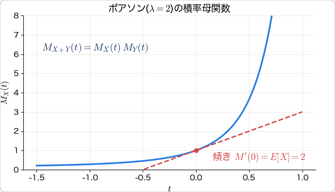
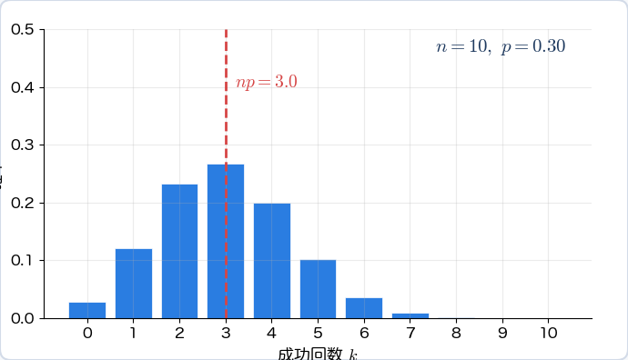
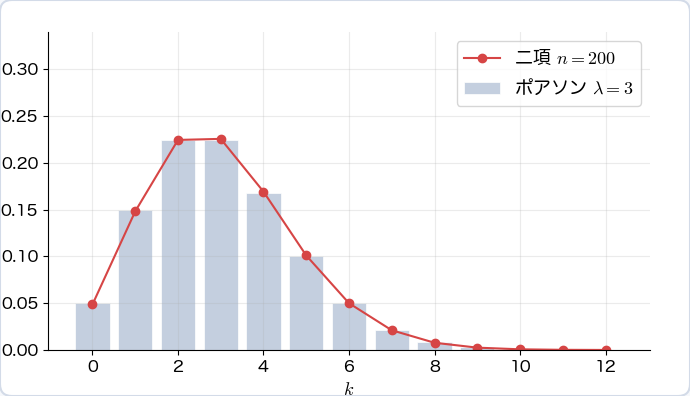
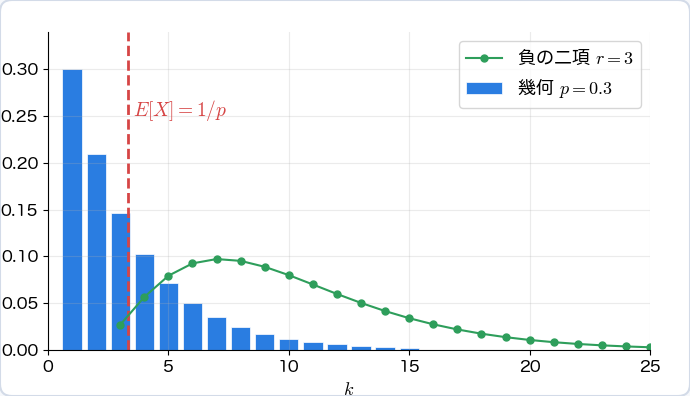
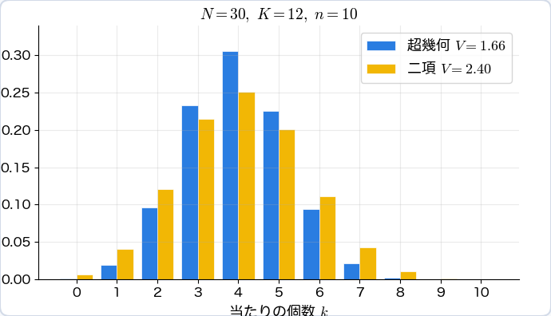
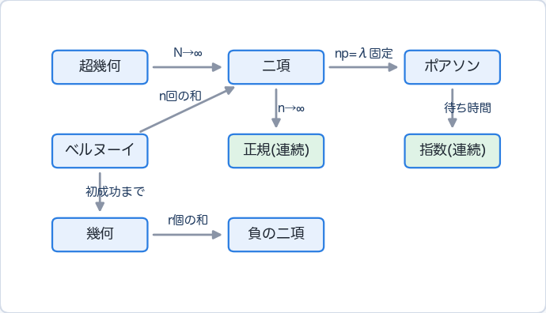

第1回 確率の基礎と離散分布
この回の学習目標
- 条件付き確率・ベイズの定理を使って「結果から原因の確率」を計算できる
- 期待値・分散の性質と、積率母関数（モーメント母関数）の使い方を説明できる
- 二項・ポアソン・幾何・負の二項・超幾何分布の期待値・分散・相互関係を押さえる
1. 条件付き確率とベイズの定理
条件付き確率 は、事象 $B$ が起きたという条件のもとでの $A$ の確率です。
$$P(A\mid B)=\frac{P(A\cap B)}{P(B)}\qquad (P(B)>0)$$
$P(A\cap B)=P(A)P(B)$ のとき $A,B$ は 独立 で、このとき $P(A\mid B)=P(A)$ です。
事象 $A_1,\dots,A_k$ が互いに排反で全体を覆う（分割）とき、全確率の公式 と ベイズの定理 が成り立ちます。
$$P(B)=\sum_{i}P(B\mid A_i)P(A_i),\qquad P(A_i\mid B)=\frac{P(B\mid A_i)P(A_i)}{\sum_{j}P(B\mid A_j)P(A_j)}$$
ベイズの定理は「原因 $A_i$ → 結果 $B$」の確率から、「結果 $B$ → 原因 $A_i$」の確率へ 条件の向きを入れ替える 公式です。後の「ベイズ統計」（第11回）の出発点になります。
例：検査の陽性的中率
有病率 1%、病気の人の 99% が陽性、健康な人でも 5% が陽性になる検査を 10000 人に行うと、人数は次の表になります。
| 陽性 | 陰性 | 計 | |
|---|---|---|---|
| 病気 | 99 | 1 | 100 |
| 健康 | 495 | 9405 | 9900 |
陽性は $99+495=594$ 人で、そのうち本当に病気なのは $99/594\approx16.7\%$ です。感度が高くても、有病率が低いと陽性者の大半は偽陽性 になります。

試験のポイント 「表（頻度）に直して数える」と、ベイズの定理の分母・分子の取り違えを防げます。
2. 期待値と分散
離散確率変数 $X$ の期待値・分散は
$$E[X]=\sum_x x\,P(X=x),\qquad V[X]=E\big[(X-E[X])^2\big]=E[X^2]-(E[X])^2$$
です。後者の形（二乗の期待値 − 期待値の二乗）が計算に便利 です。
性質（線形性）
- $E[aX+b]=aE[X]+b$（独立でなくても $E[X+Y]=E[X]+E[Y]$）
- $V[aX+b]=a^2V[X]$（定数 $b$ を足しても分散は変わらない）
- $V[X+Y]=V[X]+V[Y]+2\,\mathrm{Cov}(X,Y)$。独立なら共分散が 0 なので $V[X+Y]=V[X]+V[Y]$
例：サイコロ
$E[X]=\frac{1+2+\cdots+6}{6}=3.5$、$E[X^2]=\frac{1+4+9+16+25+36}{6}=\frac{91}{6}$ なので
$$V[X]=\frac{91}{6}-\left(\frac{7}{2}\right)^2=\frac{182-147}{12}=\frac{35}{12}\approx2.92$$

3. 積率母関数（モーメント母関数）
積率母関数 は
$$M_X(t)=E\big[e^{tX}\big]$$
で定義されます（$t=0$ の近くで存在するとき）。
性質
- $M_X(0)=1$
- $\displaystyle E[X^k]=M_X^{(k)}(0)$（$t$ で $k$ 回微分して $t=0$ を代入するとモーメントが得られる）
- $X,Y$ が独立なら $M_{X+Y}(t)=M_X(t)M_Y(t)$（和の分布が「積」で扱える）
- 積率母関数が一致すれば分布も一致する（一意性）
なぜ 2 が成り立つか：$e^{tX}=\sum_k \frac{t^kX^k}{k!}$ なので $M_X(t)=\sum_k \frac{E[X^k]}{k!}t^k$。係数を比べると $E[X^k]$ が得られます。
例：ポアソン分布
$M(t)=\sum_{k}e^{tk}\frac{e^{-\lambda}\lambda^k}{k!}=e^{-\lambda}\sum_k\frac{(\lambda e^t)^k}{k!}=\exp\{\lambda(e^t-1)\}$
$M'(t)=\lambda e^t M(t)$ より $M'(0)=\lambda$。$M''(0)=\lambda+\lambda^2$ なので $V[X]=\lambda+\lambda^2-\lambda^2=\lambda$。

試験のポイント 「独立な確率変数の和の分布を求めよ」は、積率母関数の積 → 形から分布を同定 が定番の解き方です。
4. 二項分布
成功確率 $p$ のベルヌーイ試行を $n$ 回行ったときの成功回数 $X\sim B(n,p)$：
$$P(X=k)=\binom{n}{k}p^k(1-p)^{n-k}\quad(k=0,\dots,n)$$
$X=Y_1+\cdots+Y_n$（$Y_i$ は独立なベルヌーイ）と書けるので
$$E[X]=np,\qquad V[X]=np(1-p),\qquad M(t)=(1-p+pe^t)^n$$
再生性：独立な $X_1\sim B(n_1,p)$, $X_2\sim B(n_2,p)$ の和は $B(n_1+n_2,p)$（積率母関数の積から分かる。成功確率 $p$ が同じ ことが条件）。
$p$ が小さいと右に裾が長く、$p=0.5$ で左右対称、$p$ が大きいと左に裾が長くなります。

5. ポアソン分布
一定の時間・空間に起きる稀な事象の回数のモデルで、$X\sim Po(\lambda)$：
$$P(X=k)=\frac{e^{-\lambda}\lambda^k}{k!}\quad(k=0,1,2,\dots),\qquad E[X]=V[X]=\lambda$$
二項分布の極限としての導出：$np=\lambda$ を固定して $n\to\infty$（$p=\lambda/n\to0$）とすると
$$\binom{n}{k}\left(\frac{\lambda}{n}\right)^k\left(1-\frac{\lambda}{n}\right)^{n-k}\to\frac{\lambda^k}{k!}e^{-\lambda}$$
加法性：独立なポアソン $Po(\lambda_1)$, $Po(\lambda_2)$ の和は $Po(\lambda_1+\lambda_2)$。
時間の扱い：1時間あたり平均 $\lambda$ 件なら、$t$ 時間では $Po(\lambda t)$ です（演習2）。

試験のポイント 「平均と分散が等しい」はポアソン分布の目印です（後の過分散の話につながります）。
6. 幾何分布と負の二項分布
幾何分布
成功確率 $p$ の試行を繰り返し、初めて成功するまでの試行回数 $X$：
$$P(X=k)=(1-p)^{k-1}p\ (k=1,2,\dots),\qquad E[X]=\frac1p,\quad V[X]=\frac{1-p}{p^2}$$
生存関数は $P(X>k)=(1-p)^k$（最初の $k$ 回が全部失敗）。
無記憶性：
$$P(X>m+n\mid X>m)=\frac{(1-p)^{m+n}}{(1-p)^m}=(1-p)^n=P(X>n)$$
過去に何回失敗していても、残りの待ち回数の分布は最初と同じです。
負の二項分布
$r$ 回成功するまでの試行回数 $X$：
$$P(X=k)=\binom{k-1}{r-1}p^r(1-p)^{k-r}\ (k\ge r),\qquad E[X]=\frac{r}{p},\ V[X]=\frac{r(1-p)}{p^2}$$
幾何分布 $r$ 個（独立）の和です。「失敗回数」を数える流儀もある ので、問題文の定義を必ず確認します。

7. 超幾何分布
当たりが $K$ 個ある $N$ 個の中から 非復元で $n$ 個取り出したときの当たりの個数 $X$：
$$P(X=k)=\frac{\binom{K}{k}\binom{N-K}{n-k}}{\binom{N}{n}},\qquad E[X]=n\frac{K}{N},\quad V[X]=n\frac{K}{N}\Big(1-\frac{K}{N}\Big)\frac{N-n}{N-1}$$
二項分布（復元抽出）との違いは分散の 有限修正 $\frac{N-n}{N-1}$ だけで、$N$ が大きければ二項分布 $B(n,K/N)$ で近似できます。この係数は第14回の標本調査法にもそのまま現れます。

8. 離散分布のまとめ

| 分布 | 確率関数の意味 | 期待値 | 分散 |
|---|---|---|---|
| 二項 $B(n,p)$ | $n$ 回中の成功回数 | $np$ | $np(1-p)$ |
| ポアソン $Po(\lambda)$ | 稀な事象の回数 | $\lambda$ | $\lambda$ |
| 幾何 | 初成功までの回数 | $1/p$ | $(1-p)/p^2$ |
| 負の二項 | $r$ 回成功までの回数 | $r/p$ | $r(1-p)/p^2$ |
| 超幾何 | 非復元抽出での当たり数 | $nK/N$ | $n\frac{K}{N}(1-\frac{K}{N})\frac{N-n}{N-1}$ |
関係：ベルヌーイ → 二項（$n$ 個の和）→ ポアソン（$np=\lambda$ 固定で $n\to\infty$）／正規（$n\to\infty$）、超幾何 → 二項（$N\to\infty$）、幾何 → 負の二項（$r$ 個の和）。
演習問題
演習1 ベイズの定理
問題 ある病気の有病率は 2%。検査は、病気の人の 90% が陽性、健康な人の 5% が陽性になる。陽性と出たとき、本当に病気である確率を求めよ。
解答 「病気」を $D$、「陽性」を $+$ とする。
$$P(D\mid +)=\frac{P(+\mid D)P(D)}{P(+\mid D)P(D)+P(+\mid \bar D)P(\bar D)}=\frac{0.9\times0.02}{0.9\times0.02+0.05\times0.98}=\frac{0.018}{0.067}\approx0.269$$
約 27%。精度の高い検査でも、有病率が低いと陽性的中率は高くならない。
演習2 ポアソン分布
問題 1時間に平均 3 件の電話がかかる。件数がポアソン分布に従うとき、(1) 1時間に 2 件以上かかる確率、(2) 30 分間に 1 件もかからない確率を求めよ。
解答 (1) $X\sim Po(3)$。余事象を使う：$P(X\ge2)=1-P(0)-P(1)=1-e^{-3}(1+3)=1-4e^{-3}\approx1-0.199=\mathbf{0.801}$。
(2) 30 分では $\lambda=3\times0.5=1.5$。$P(X=0)=e^{-1.5}\approx\mathbf{0.223}$。時間が変わったら $\lambda$ も時間に比例させる のを忘れない。
演習3 幾何分布と無記憶性
問題 成功確率 0.2 のベルヌーイ試行を繰り返し、初めて成功するまでの回数を $X$ とする。(1) $E[X]$、(2) $P(X>5)$、(3) すでに 3 回失敗したとき、さらに 5 回以上失敗する確率 $P(X>8\mid X>3)$ を求めよ。
解答 (1) $E[X]=1/0.2=\mathbf{5}$。 (2) 最初の 5 回がすべて失敗：$P(X>5)=0.8^5\approx\mathbf{0.328}$。 (3) 無記憶性より $P(X>8\mid X>3)=P(X>5)=0.8^5\approx\mathbf{0.328}$。
演習4（発展） 二項分布の分散の別解
問題 $X\sim B(n,p)$ について $E[X(X-1)]=n(n-1)p^2$ を示し、これから $V[X]$ を求めよ。
解答 $X=\sum Y_i$ とすると $X(X-1)=\sum_{i\ne j}Y_iY_j$（$n(n-1)$ 個の項）。独立なので各項の期待値は $p^2$、よって $E[X(X-1)]=n(n-1)p^2$。 $E[X^2]=E[X(X-1)]+E[X]=n(n-1)p^2+np$ より
$$V[X]=n(n-1)p^2+np-(np)^2=np-np^2=np(1-p)$$
まとめ・チェックリスト
- [ ] ベイズの定理を、頻度の表に直して計算できる
- [ ] $V[X]=E[X^2]-(E[X])^2$ と、$V[aX+b]$、和の分散（独立のとき）を使える
- [ ] 積率母関数から期待値・分散を求め、独立な和の分布を同定できる
- [ ] 二項・ポアソン・幾何・負の二項・超幾何の期待値と分散を言える
- [ ] ポアソンが二項の極限であること、幾何分布の無記憶性を説明できる
次回：連続分布と変数変換
動画の音声：VOICEVOX:ずんだもん / VOICEVOX:四国めたん 立ち絵：坂本アヒル様